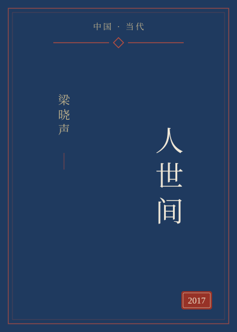
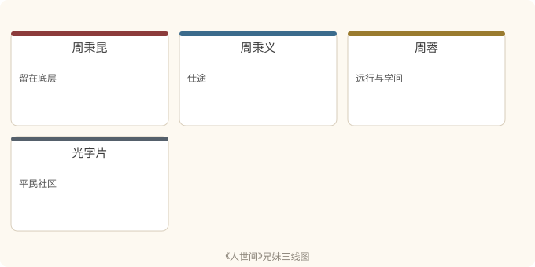

人世间
一、基本信息
| 作者 | 梁晓声 |
|---|---|
| 成书/出版 | 第十届茅盾文学奖获奖作品（中国作家网专题 C020：'作品：《人世间》 作者：梁晓声'；出版具体日期待核） 第十届茅盾文学奖专题（中国作家网）（官方文学机构） |
| 国别/地区 | 中国 |
| 时代 | 现当代 · 当代 |
| 体裁 | 长篇小说 |
| 语言 | 汉语（白话） |

《人世间》兄妹三线图（主题·结构图）
二、创作背景
中国作家网专题（C020）授奖词：'梁晓声讲述了一代人在伟大历史进程中的奋斗、成长和相濡以沫的温情，塑造了有情有义、坚韧担当、善良正直的中国人形象'；'重申理想主义价值，气象正大而情感深沉'。
题材：东北某省会城市'光字片'平民社区周家三代近五十年（通说待核）。
三、内容脉络
周秉义（仕途）、周蓉（学者）、周秉昆（工人）兄妹三线（通说待核）。
从三线建设到改革开放的平民史诗（通说待核）。
四、主要人物表
| 人物 | 身份 | 说明 |
|---|---|---|
| 周秉昆 | 工人 | 留在'光字片'的小儿子（通说待核） |
| 周秉义 | 官员 | 大哥（通说待核） |
| 周蓉 | 学者 | 姐姐（通说待核） |
五、主题与艺术特点
- 平民史诗：'好人文化'（C020 授奖词语境）。
- 工人社区五十年变迁（通说）。
- 理想主义的重申（C020：'重申理想主义价值'）。
六、影响与评论
- 中国作家网：第十届茅盾文学奖获奖作品；授奖词节选（C020）。
第十届茅盾文学奖专题（中国作家网）（官方文学机构） - 中国作家网官方名单：第十届（2015—2018）获奖作品（C012）。
历届茅盾文学奖获奖作品一览（中国作家网）（官方文学机构）
七、阅读建议
难点
- 三卷体量。
- 东北国企改革年代背景。
- 《人世间》（中国青年出版社，通说待核）。
对照《平凡的世界》：平民史诗的南北两版。
八、待核实
- 周家兄妹名与'光字片'地名核对。
- 2017年12月中国青年出版社初版核对。
- 2022年电视剧改编细节待核。
本页主要来源
梁晓声的其他收录作品：人世间